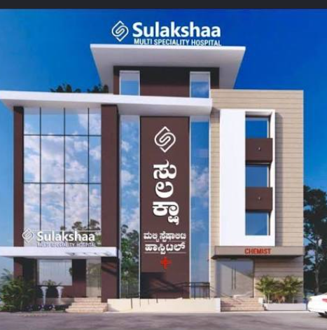

Expert Medical Care
Led by seasoned clinical practitioners and specialist physicians providing evidence-based consultations, accurate diagnoses, and comprehensive inpatient and outpatient management.
“Advanced Care. Compassionate Hearts.”
Excellence in multispeciality medicine, 24/7 emergency casualty, and advanced diagnostics. Delivering patient-first healing and clinical precision at Sulakshaa Multi Speciality Hospital, Mysuru.


From general medicine to advanced cardiology & surgery
Senior clinical leadership led by Dr. Laxme Gowda
Dedicated patient care wards, ICU care & recovery units
Round-the-clock emergency desk, diagnostics & pharmacy
Sulakshaa Multi Speciality Hospital is dedicated to delivering coordinated clinical services, precision diagnostics, and patient-first care to the people of Mysuru and surrounding regions.
Led by seasoned clinical practitioners and specialist physicians providing evidence-based consultations, accurate diagnoses, and comprehensive inpatient and outpatient management.
Equipped with modern diagnostic imaging, digital radiology, dedicated laboratory services, and advanced triage systems to assist clinicians in precise, timely decision making.

From smooth admissions and accessible nursing to wheelchair-friendly architecture and attendant guidance, our care philosophy places patient dignity and comfort at the centre.
Our multi-disciplinary departments deliver specialized consultation, diagnostics, and therapeutic care across key medical disciplines.

Minimally invasive joint reconstruction, arthroscopy, acute trauma fracture stabilization, and personalized physical mobility rehabilitation.
Select any speciality to view conditions treated, associated specialists, and available diagnostic facilities.

Comprehensive cardiovascular assessment, preventive cardiology, ECG, echocardiography, and hypertension management.

Specialized management for bone fractures, joint pain, arthritis, spinal care, trauma management, and mobility restoration.

Diagnosis and clinical care for chronic headaches, stroke evaluation, neurological disorders, neuropathy, and seizure conditions.
Digestive health, liver care, gastrointestinal disorders, acid reflux, abdominal pain investigation, and nutritional therapy.

Compassionate cancer screening, early detection guidance, medical oncology coordination, and supportive care for patients.
Comprehensive child care, neonatal monitoring, immunization programmes, developmental growth checks, and pediatric illness care.
Adult primary healthcare, fever evaluation, diabetes control, infectious disease treatment, and preventive lifestyle wellness.

Antenatal consultations, maternal health support, high-risk pregnancy monitoring, postnatal recovery, and mother-baby care.

Clinical evaluation and treatment of skin conditions, allergies, eczema, acne, psoriasis, and dermatological infections.

Confidential mental health support, anxiety and depression counseling, stress management, and behavioural health therapy.

Surgical consultations for hernia, appendicitis, gallbladder conditions, wound healing, trauma repair, and minor operative procedures.

Pre-operative anesthetic assessment, advanced perioperative monitoring, pain medicine, and critical care anesthesia support.
Consult experienced practitioners dedicated to empathetic listening, clinical accuracy, and advanced multidisciplinary treatment in Mysuru.
Senior Consultant Physician & Clinical Director
MBBS, MD (General Medicine)
Veteran medical leader providing master clinical diagnosis, chronic lifestyle disease therapy, and holistic geriatric care in Mysuru.
 Cardiac Care
16+ Yrs Exp
Cardiac Care
16+ Yrs Exp
Consultant Cardiologist
MD, DM (Cardiology)
Cardiovascular specialist dedicated to preventative cardiology, coronary evaluations, hypertension management, and cardiac rehabilitation.
 Orthopedics
18+ Yrs Exp
Orthopedics
18+ Yrs Exp
Senior Orthopedic & Joint Surgeon
MS Ortho, DNB (Orthopedic Surgery)
Expert in joint reconstruction, arthroscopic surgery, fracture management, and advanced musculoskeletal rehabilitation.
Consultant Paediatrician
MD Paediatrics, DCH
Compassionate child health physician delivering gentle neonatal care, immunization monitoring, developmental checkups, and pediatric triage.
 Neurology
14+ Yrs Exp
Neurology
14+ Yrs Exp
Consultant Neurologist
MBBS, DM (Neurology)
Specialist in clinical neurology, acute stroke evaluation, epilepsy care, chronic headache disorders, and neuromuscular diagnostics.
Consultant Obstetrician & Gynaecologist
MBBS, MS OBG, DGO
Dedicated women's healthcare practitioner providing empathetic antenatal monitoring, safe deliveries, and comprehensive gynaecological care.
Built on a four-decade legacy of ethical medicine, clinical precision, and warm community care in Mysuru.
Directed by veteran clinicians who prioritize patient wellbeing above all else, ensuring evidence-based medical decisions and trusted counsel.
Round-the-clock emergency medical response with rapid triage, critical care stabilization, on-site diagnostics, and fully staffed casualty suites.
Fully automated clinical pathology, digital ultrasonography, ECG, Echocardiography, and rapid lab tests for prompt, accurate clinical interventions.
Clear clinical counseling, dignified patient communication, barrier-free hospital accessibility, and transparent healthcare administration.
Explore Sulakshaa Multi Speciality Hospital's 100-bed purpose-built clinical infrastructure in Mysuru — integrating rapid 24/7 casualty triage, advanced radiological diagnostics, sterile surgical suites, and calming patient recovery spaces.

Our emergency wing features direct-access ambulance porticos, dedicated resuscitation bays, point-of-care vital telemetry, and on-duty emergency medical officers prepared 24 hours a day, 365 days a year to manage acute trauma, cardiac events, and surgical emergencies without delay.
Fast, clear, and low-dose diagnostic imaging conducted in-house. Equipped with high-slice computed tomography (CT), high-resolution magnetic resonance imaging (MRI) capabilities, low-radiation digital radiography (X-Ray), and 4D color Doppler ultrasound for comprehensive cross-sectional pathology.

High-throughput automated clinical analyzers delivering rapid turnaround times for complete blood counts, cardiac enzymes (Troponin I), arterial blood gas (ABG), lipid profiles, renal function, liver enzymes, and microbiological cultures under strict quality verification.
Equipped for acute medical, surgical, and coronary intensive care. Includes advanced multi-parameter cardiac telemetry, invasive and non-invasive mechanical ventilators, negative pressure isolation capability, and dedicated bedside nursing ratios for unstable clinical patients.

Thoughtfully crafted healing spaces designed for patient comfort and family ease. Features private and semi-private recovery rooms, barrier-free access with gentle entry ramps and stretcher-sized elevators, plus an authentic ground-floor 24/7 stocked pharmacy.
A glimpse inside our specialized clinical facilities, diagnostics, and recovery wings in Mysuru.


We believe that medical excellence is strongest when accompanied by kindness, clear communication, and barrier-free hospital navigation.
Our front desk helps coordinate consultations with specialists, assisting with registration, OPD tokens, and appointment scheduling to minimize unnecessary delays.
Clear hospital floor wayfinding, helpdesk personnel, and compassionate patient guides ensure families feel oriented, informed, and supported during their stay.
Barrier-free architecture featuring smooth entrance ramps, elevator access to all wards, wide clinical doorways, and accessible restrooms.
Dedicated private feeding rooms for mothers, comfortable attendant waiting areas, and a patient relations team ready to assist with non-clinical questions.
Convenient location in Mysuru with straightforward road connectivity, prominent building signage in Kannada and English, and dedicated help lines.
We practice honest healthcare communication. Doctors and clinical teams explain diagnosis, investigation needs, and care plans without misleading claims.
Authentic experiences from patients and families treated with empathy, dignity, and clinical excellence at Sulakshaa Multi Speciality Hospital.
“When my father developed sudden chest tightness, the 24/7 casualty team at Sulakshaa acted within minutes. Dr. Priya Sharma and the ICU nursing staff provided exemplary care and clear explanations at every step. Today he is healthy and back to his morning walks.”
“Dr. Sneha Hegde is remarkably gentle with infants. She diagnosed my 10-month-old daughter’s wheezing accurately without overprescribing medications. The pediatric OPD is welcoming, hygienic, and makes young parents feel truly supported.”
“Dr. Laxme Gowda is a true veteran clinician. He spent ample time listening to my chronic history and tailored an effective lifestyle plan. The hospital environment is clean, peaceful, and barrier-free with wheelchair ramps everywhere.”
Connect with our medical reception team to enquire about specialist consultations, diagnostic tests, or doctor OPD availability. We are here to guide you with care and professionalism.
Sulakshaa Multi Speciality Hospital, Mysuru, Karnataka, India
+91 821 234 5678* (Subject to hospital verification)
Monday - Saturday: 8:00 AM - 8:00 PM
24/7 Casualty & Emergency Always Open
No Medical Details Required: Please share only your contact details and preferred department. Our front desk representative will call back to confirm an appointment slot.
Submit your preferred date and department; our team will follow up via phone.
Visit our medical facility in Mysuru. We are easily accessible for ambulances, private vehicles, and public transport.
Sulakshaa Multi Speciality Hospital
Mysuru, Karnataka, India
(Exact road & ward address to be updated upon hospital confirmation)
Emergency / Casualty: +91 821 234 5678*
General Reception: +91 821 234 5679*
Pan-India Emergency: 112
Casualty & Emergency: 24 Hours / 7 Days a Week
In-house Chemist (Pharmacy): 24 Hours / 7 Days a Week
Outpatient Clinics (OPD): Mon - Sat: 8:00 AM - 8:00 PM
Diagnostic Imaging: 24/7 for Inpatients & Emergency
Mysuru, Karnataka, India
ಸುಲಕ್ಷಾ ಮಲ್ಟಿ ಸ್ಪೆಷಾಲಿಟಿ ಹಾಸ್ಪಿಟಲ್, ಮೈಸೂರು
Centrally situated in Mysuru with ample ambulance access, barrier-free entrance, and parking facilities.
View Full Route on Google Maps